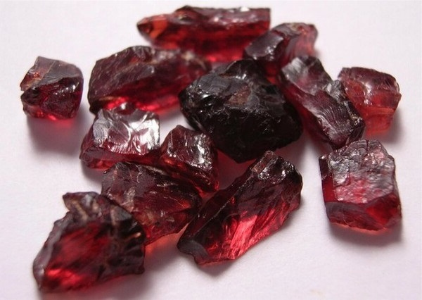
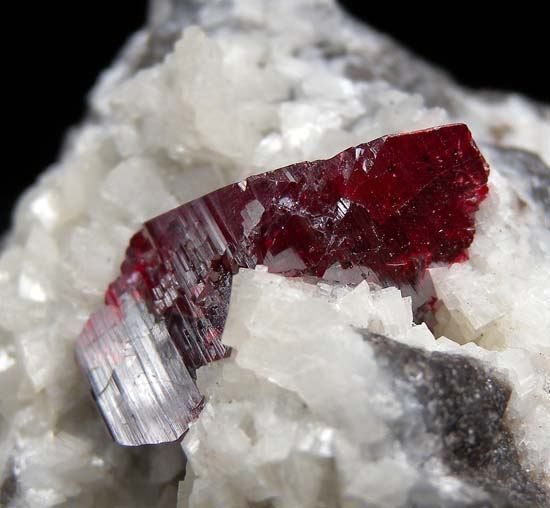
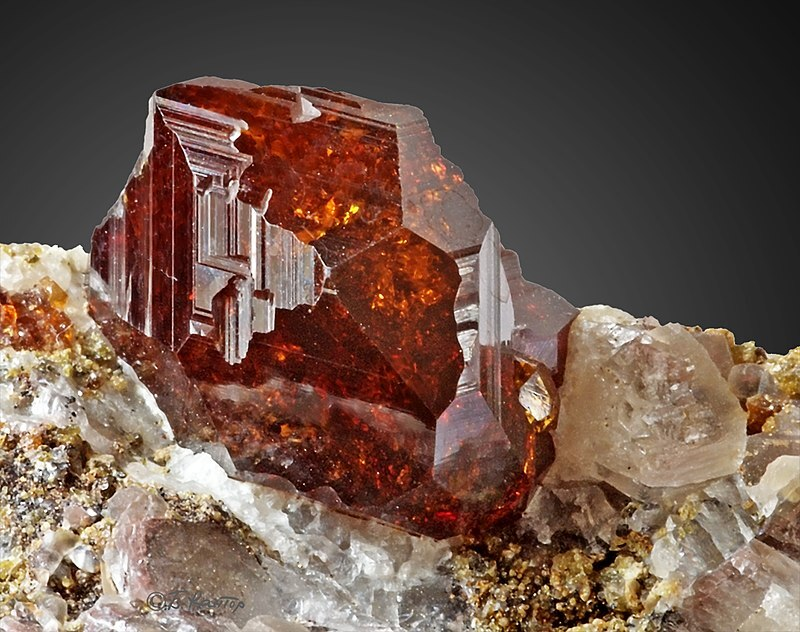
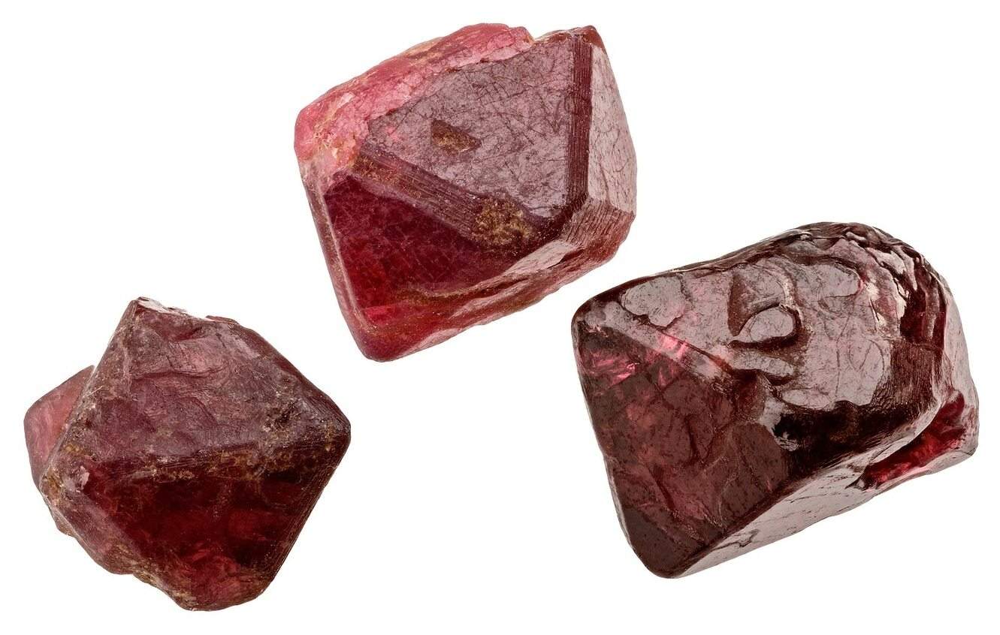
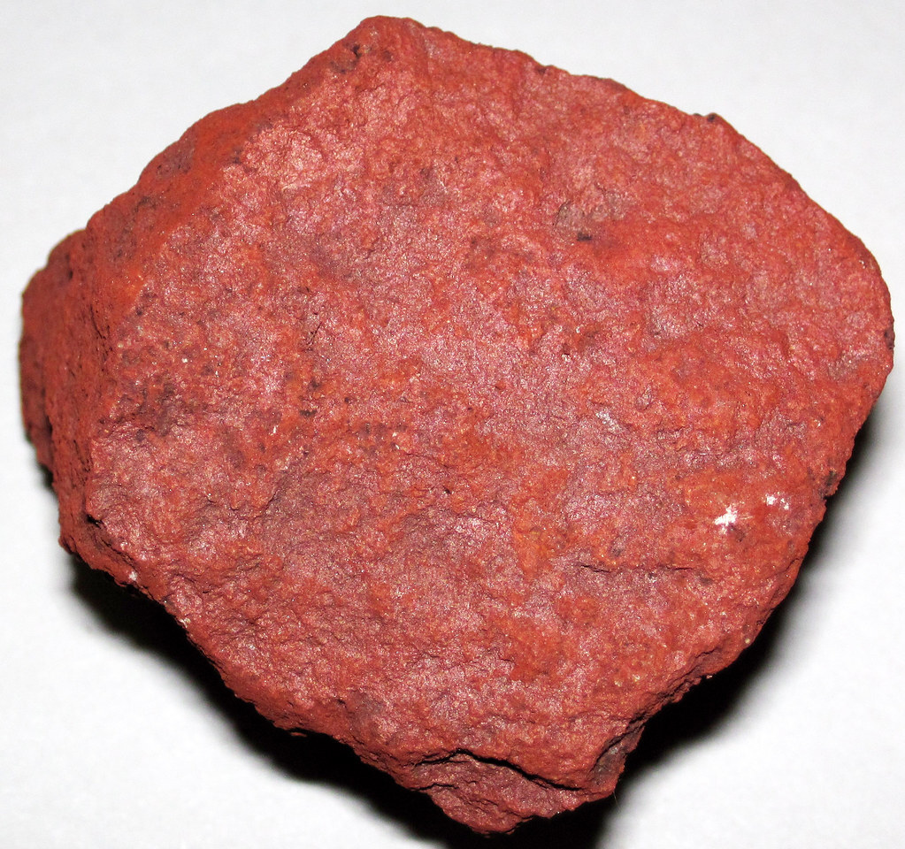
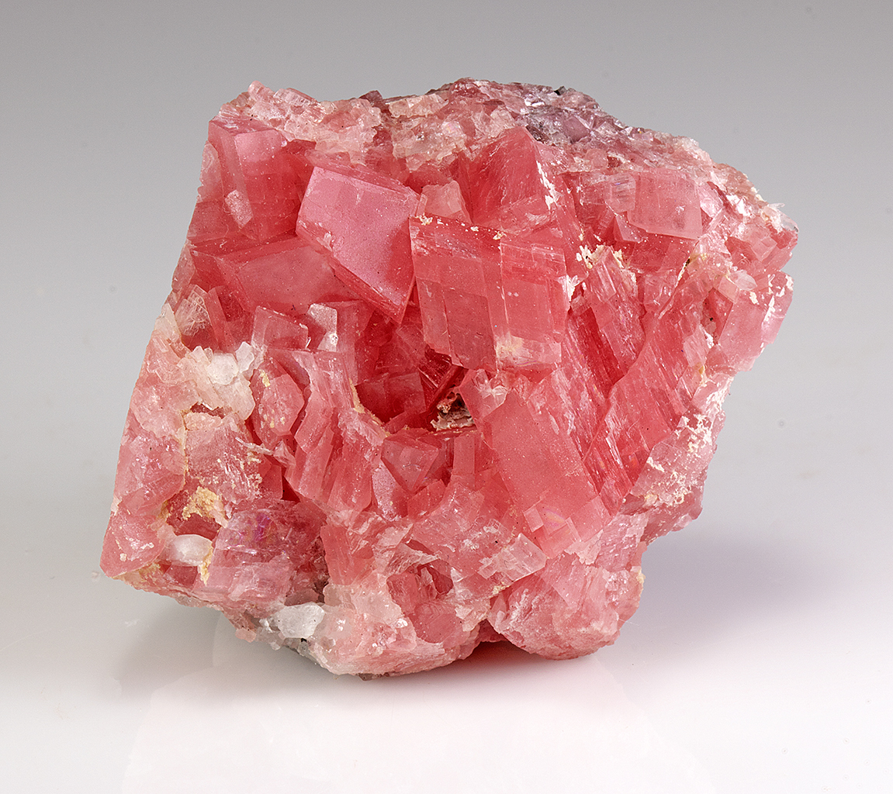
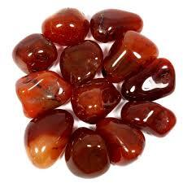
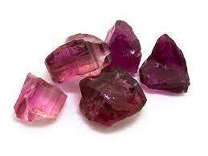

Reddish Rocks: A Journey through Reddish Rock Formations and Properties
Click here to see our crystal hunting maps
Have you ever wondered why some rocks are red in color? Red rocks are not only beautiful but also tell us a lot about the history and nature of our planet.
Scattered across the globe, from the sun-baked canyons of Arizona to the ancient outback of Australia, red rocks stand as silent yet potent witnesses to Earth's incredible history and wonders. But beneath their vibrant hues lies the secrets to what alchemy painted them in such captivating shades.
In this article, prepare to be swept away by the allure of different reddish rocks and minerals, how they are formed, the components that make up some of the most stunning landscapes in the world, and where to find them.
We will also learn about their types, properties, uses, and significance. Let's get right into it.
Types of Reddish Rocks and Minerals
Reddish rocks and minerals are those that contain iron, chromium, mercury, or other elements that give them a red hue. Some of the most common and well-known reddish rocks and minerals are:
-
Ruby
Ruby is a red gem that belongs to the corundum family of minerals. It has a chemical formula of Al₂O₃(Cr3+), which means that it is aluminum oxide with traces of chromium. Ruby has a hexagonal crystal structure and a hardness of 9 on the Mohs scale. It can range from pink to blood-red in color, depending on the amount of chromium.
How they are formed
Ruby is formed by the metamorphism of rocks that contain aluminum and chromium, such as basalt, gneiss, and marble. The high temperature and pressure cause the aluminum and chromium atoms to replace some of the oxygen atoms in the corundum lattice, creating a red color. Ruby can also be formed by the magmatic crystallization of magma that contains aluminum and chromium, such as pegmatite and lamproite.
Where to find Ruby
Ruby is found in many places around the world, but the most famous and valuable sources are in Myanmar, Thailand, Sri Lanka, India, Afghanistan, Madagascar, Tanzania, and Vietnam. Ruby is also synthesized in laboratories for industrial and commercial purposes.
-
Cinnabar
Cinnabar is a red ore that is the main source of mercury. It has a chemical formula of HgS, which means that it is mercury sulfide. Cinnabar has a trigonal crystal structure and a hardness of 2 to 2.5 on the Mohs scale. It has a bright scarlet to brick-red color and sometimes exhibits a metallic luster.
How they are formed
Cinnabar is formed by the hydrothermal alteration of rocks that contain mercury, such as volcanic rocks, sedimentary rocks, and metamorphic rocks. The hot water and steam carry the mercury and sulfur ions, which react to form cinnabar. Cinnabar can also be formed by the volcanic sublimation of mercury and sulfur gases, which condense to form cinnabar crystals.
Where to find Cinnabar
Cinnabar is found in many places around the world, but the most significant and historic sources are in China, Spain, Italy, Slovenia, Peru, Mexico, and the USA. Cinnabar is also produced artificially by the reaction of mercury and sulfur.
-
Garnet
Garnet is a group of red gems that have similar chemical and physical properties, but different crystal structures. The most common garnet is almandine, which has a chemical formula of R3R2(SiO4)3. Garnet has a cubic crystal structure and a hardness of 6.5 to 7.5 on the Mohs scale. It can vary from deep red to brownish-red in color, depending on the iron content.
How they are formed
Garnet is formed by the metamorphism of rocks that contain iron and aluminum, such as schist, gneiss, and amphibolite. The high temperature and pressure cause the iron and aluminum atoms to combine with the silicon and oxygen atoms in the rock, creating the garnet structure. Garnets can also be formed by the igneous crystallization of magma that contains iron and aluminum, such as granites and basalts.
Where to find Garnet
Garnet is found in many places around the world, but the most renowned and valuable sources are in India, Sri Lanka, Brazil, Russia, Tanzania, Kenya, and Madagascar. Garnet is also mined in many other countries, such as Canada, Australia, Norway, and the USA.
-
Spinel
Spinel is a red crystal that is often mistaken for ruby. It has a chemical formula of MgAl2O4, which means that it is magnesium aluminum oxide. Spinel has a cubic crystal structure and a hardness of 8 on the Mohs scale. It has a vivid red to pinkish-red color and sometimes shows a star effect when cut.
How they are formed
Spinel is formed by the metamorphism of rocks that contain magnesium and aluminum, such as dolomite, marble, and serpentinite. The high temperature and pressure cause the magnesium and aluminum atoms to replace some of the calcium and silicon atoms in the rock, creating the spinel structure. Spinel can also be formed by the magmatic crystallization of magma that contains magnesium and aluminum, such as kimberlite and lamprophyre.
Where to find Spinel
Spinel is found in many places around the world, but the most famous and precious sources are in Myanmar, Sri Lanka, Tajikistan, Afghanistan, and Vietnam. Spinel is also found in many other countries, such as Tanzania, Madagascar, Pakistan, and Thailand.
-
Hematite
Hematite is a red ore that is the most abundant source of iron. It has a chemical formula of Fe2O3, which means that it is iron oxide. Hematite has a hexagonal crystal structure and a hardness of 5 to 6 on the Mohs scale. It has a dark red-to-black color and sometimes has a metallic or earthy luster.
How they are formed
Hematite is formed by the oxidation of iron-bearing minerals, such as magnetite, pyrite, and siderite. The oxygen in the air or water reacts with the iron in the mineral, creating the hematite structure. Hematite can also be formed by the precipitation of iron-rich solutions, such as hydrothermal fluids, lake water, and seawater.
Where to find Hematite
Hematite is found in many places around the world, but the most important and large-scale sources are in Australia, Brazil, China, India, Russia, and the USA. Hematite is also extracted from many other countries, such as Canada, South Africa, Sweden, and Venezuela.
-
Rhodocrosite
Rhodocrosite is a pink to red mineral that belongs to the carbonate group of minerals. It has a chemical formula of MnCO₃, which means that it is manganese carbonate. Rhodocrosite has a trigonal crystal structure and a hardness of 3.5 to 4 on the Mohs scale. It has a rose-red to brownish-red color and sometimes shows a banded or stalactitic pattern.
How they are formed
Rhodocrosite is formed by the hydrothermal alteration of rocks that contain manganese, such as manganese ore, limestone, and dolomite. The hot water and steam carry the manganese and carbonate ions, which react to form rhodocrosite. Rhodocrosite can also be formed by the sedimentary deposition of manganese-rich solutions, such as lake water and seawater.
Where to find Rhodocrosite
Rhodocrosite is found in many places around the world, but the most exquisite and valuable sources are in Argentina, Peru, Romania, South Africa, and the USA. Rhodocrosite is also discovered in many other countries, such as Canada, Mexico, France, and Germany.
-
Carnelian
Carnelian is a red-to-orange variety of chalcedony, which is a type of quartz. It has a chemical formula of SiO₂, which means that it is silicon dioxide. Carnelian has a trigonal crystal structure and a hardness of 6.5 to 7 on the Mohs scale. It has a reddish-brown to orange-red color and sometimes shows a translucent or opaque appearance.
How they are formed
Carnelian is formed by the hydrothermal alteration of rocks that contain silica, such as volcanic rocks, sedimentary rocks, and metamorphic rocks. The hot water and steam carry the silica and iron ions, which react to form carnelian. Carnelian can also be formed by the weathering and erosion of rocks that contain silica and iron, such as granite, sandstone, and shale.
Where to find Carnelian
Carnelian is found in many places around the world, but the most ancient and famous sources are in India, Egypt, Brazil, and Uruguay. Carnelian is also mined in many other countries, such as Australia, Botswana, Madagascar, and the USA.
-
Rubellite
Rubellite is a red-to-pink variety of tourmaline, which is a group of boron silicate minerals. It has a complex chemical formula that varies depending on the composition of the tourmaline, but it usually contains elements such as aluminum, iron, magnesium, lithium, and sodium. Rubellite has a trigonal crystal structure and a hardness of 7 to 7.5 on the Mohs scale. It has a deep red to purplish-red color and sometimes shows a pleochroic effect, which means that it changes color depending on the angle of light.
How they are formed
Rubellite is formed by the metamorphism of rocks that contain boron, such as pegmatite, schist, and marble. The high temperature and pressure cause the boron and other elements to combine with the silicon and oxygen atoms in the rock, creating the tourmaline structure. Rubellite can also be formed by the magmatic crystallization of magma that contains boron, such as granitic and rhyolitic magma.
Where to find Rubellite
Rubellite is found in many places around the world, but the most splendid and rare sources are in Brazil, Madagascar, Mozambique, Nigeria, and Afghanistan. Rubellite is also found in many other countries, such as Russia, Pakistan, Sri Lanka, and the USA.
-
Precious Coral

Precious coral is a red-to-pink organic gem that is produced by marine animals, such as corals and sea fans. It has a chemical formula of CaCO3, which means that it is calcium carbonate. Precious coral has an organic structure and a hardness of 3 to 4 on the Mohs scale. It has a pinkish-red to deep-red color and sometimes shows a polished or matte appearance.
How they are formed
Precious coral is formed by the growth of coral polyps, which are tiny animals that live in colonies in the ocean. The coral polyps secrete calcium carbonate, which forms the skeleton of the coral. The coral polyps also have symbiotic algae, which give the coral its color. Precious coral can also be formed by the growth of sea fans, which are similar to corals but have a fan-shaped structure.
Where to find Precious coral
Precious coral is found in many places around the world, but the most exclusive and endangered sources are in the Mediterranean Sea, the Red Sea, and the Pacific Ocean. Precious coral is also harvested from other regions, such as the Indian Ocean, the Atlantic Ocean, and the Caribbean Sea.
-
Red Jasper

Red jasper is a red variety of chalcedony, which is a type of quartz. It has a chemical formula of SiO₂, which means that it is silicon dioxide. Red jasper has a trigonal crystal structure and a hardness of 6.5 to 7 on the Mohs scale. It has a brick-red to brownish-red color and sometimes shows a spotted or striped pattern.
How they are formed
Red jasper is formed by the sedimentary deposition of silica-rich solutions, such as groundwater, river water, and lake water. The silica and iron ions in the solution react to form red jasper. Red jasper can also be formed by the metamorphism of rocks that contain silica and iron, such as shale, sandstone, and conglomerate.
Where to find Red Jasper
Red jasper is found in many places around the world, but the most ancient and symbolic sources are in Egypt, India, China, and Germany. Red jasper is also mined in many other countries, such as Brazil, Australia, Canada, and the USA.
Other very common reddish rocks and minerals found in nature include Fire Opal, Realgar, Red Beryl, Pezzottaite, Rhodonite, and Vanadinite. These different red rocks and minerals have different chemical compositions, crystal structures, and color variations, but they all share the common trait of being red gems, red crystals, or red ore.
Related Topic: Comprehensive Guide to Identifying Minerals and Rocks
Properties of Reddish Rocks and Minerals
Reddish rocks and minerals have various properties that affect their appearance, durability, and value. Some of the properties that are important to consider are:
- Hardness: Hardness is a measure of how resistant a mineral is to scratching. It is determined by comparing it to a scale of 10 minerals, known as the Mohs scale, where 1 is the softest and 10 is the hardest. Hardness is important for reddish rocks and minerals because it indicates how well they can withstand wear and tear, and how easy they are to cut and polish. Generally, the harder the mineral, the more durable and valuable it is.
- Specific Gravity: Specific gravity is a measure of how dense a mineral is compared to water. It is calculated by dividing the weight of the mineral by the weight of an equal volume of water. Specific gravity is important for reddish rocks and minerals because it indicates how heavy they are, and how much they will sink or float in water. Generally, the higher the specific gravity, the heavier and more valuable the mineral is.
- Refractive Index: Refractive index is a measure of how much a mineral bends light when it passes through it. It is determined by comparing the speed of light in a vacuum to the speed of light in the mineral. The refractive index is important for reddish rocks and minerals because it indicates how brilliant and sparkling they are, and how much they will reflect or refract light. Generally, the higher the refractive index, the more brilliant and valuable the mineral is.
- Luster: Luster is a measure of how a mineral reflects light from its surface. It is described by terms such as metallic, vitreous, resinous, pearly, silky, or dull. Luster is important for reddish rocks and minerals because it indicates how shiny and attractive they are, and how much they will catch the eye. Generally, the more lustrous the mineral, the more appealing and valuable it is.
These are some of the properties of reddish rocks and minerals that can be measured and compared. They have different effects on the reddish rock characteristics, reddish rock quality, and reddish rock price.
Uses of Reddish Rocks and Minerals
Reddish rocks and minerals have various uses that depend on their properties, availability, and demand. Some of the uses that are common and important are:
-
Jewelry Making
Jewelry making is one of the most popular and profitable uses of reddish rocks and minerals. Red gems, such as ruby and garnet, are highly sought after for their beauty, durability, and rarity. They are often cut and polished into various shapes and sizes, and set into rings, earrings, necklaces, bracelets, and other accessories. Red crystals, such as spinel and cinnabar, are also used for jewelry making, but they are less valuable and more abundant than red gems. Red ore, such as hematite, is rarely used for jewelry making, but it can be polished into beads or cabochons for a rustic or ethnic look.
-
Pigment Production
Pigment production is another important use of reddish rocks and minerals. Red ore, such as cinnabar and hematite, are the main sources of red pigments, such as vermilion and ochre. These pigments are used for coloring paints, inks, cosmetics, ceramics, and textiles. Red gems and crystals, such as ruby and spinel, can also be used for pigment production, but they are more expensive and less efficient than red ore. Red pigments have been used for artistic, cultural, and religious purposes since ancient times, and they are still valued for their vivid and symbolic colors.
-
Mercury Extraction
Mercury extraction is a specialized and hazardous use of reddish rocks and minerals. Red ore, such as cinnabar, is the only source of mercury, which is a liquid metal that has many industrial and medical applications. Mercury can be extracted from cinnabar by heating it in a furnace and condensing the vapor. However, this process is dangerous and polluting, as mercury is highly toxic and volatile. Mercury extraction requires special equipment and precautions, and it is regulated by environmental and health authorities.
-
Scientific Research
Scientific research is a niche and innovative use of reddish rocks and minerals. Red gems and crystals, such as ruby and spinel, have unique optical and magnetic properties that make them useful for scientific experiments and inventions. For example, ruby is used for making lasers, which are devices that emit intense beams of light. Spinel is used for making magnets, which are materials that produce magnetic fields. Red ore, such as hematite, is also used for scientific research, especially for studying the origin and evolution of the Earth and other planets.
These are some of the uses of reddish rocks and minerals that can be found in various fields and industries. They have different benefits and drawbacks, depending on the reddish rock applications, reddish rock advantages, and reddish rock disadvantages.
Examples of Famous Reddish Rock Formations

Reddish rocks and minerals can also be seen in nature, forming some of the most spectacular and fascinating landscapes in the world. Some of the examples of famous reddish rock formations are:
-
The Grand Canyon: The Grand Canyon is a reddish rock landscape that is located in Arizona, USA. It is a deep and wide gorge that was carved by the Colorado River over millions of years. It is composed of layers of sedimentary rocks, such as sandstone, shale, and limestone, that have different shades of red, orange, and brown. The Grand Canyon is one of the natural wonders of the world, and it attracts millions of visitors every year. It is also a UNESCO World Heritage Site and a national park that preserves the geology, ecology, and culture of the region.
-
The Red Beds: The Red Beds are a reddish rock site that is located in Texas, USA. They are a series of fossil-rich strata that date back to the Permian period, about 250 million years ago. They are composed of red-colored rocks, such as siltstone, mudstone, and shale, that contain the remains of ancient animals and plants. The Red Beds are one of the most important sources of information about the Permian extinction, which was the largest mass extinction event in the history of life. They are also a popular destination for paleontologists, geologists, and tourists who want to see the fossils and the scenery.
-
The Red Rocks Park: The Red Rocks Park is a reddish rock landscape that is located in Colorado, USA. It is a natural amphitheater that was formed by the erosion of sandstone and conglomerate rocks over millions of years. It is composed of red-colored rocks, such as fountain formation, lyons formation, and ingleside formation, that have distinctive shapes and sizes. The Red Rocks Park is one of the most famous venues for music concerts, and it has hosted many legendary artists and bands. It is also a recreational area that offers hiking, biking, and wildlife viewing.
-
Monument Valley, Utah, USA: Monument Valley is a region of the Colorado Plateau that features a cluster of sandstone buttes, the largest reaching 1,000 feet (300 m) above the valley floor. The buttes have distinctive shapes and sizes and are composed of red-colored rocks, such as fountain formation, lyons formation, and ingleside formation. The valley is sacred to the Navajo people, who call it Tsé Biiʼ Ndzisgaii, meaning valley of the rocks. Monument Valley has been featured in many movies and media, especially Westerns, as a symbol of the American West.
-
Uluru (Ayers Rock), Australia: Uluru is a large sandstone formation in the centre of Australia. It is not a canyon, but a giant natural amphitheater that rises 863 m (2,831 ft) above sea level and has a circumference of 9.4 km (5.8 mi). The rock is made of arkosic sandstone, which contains a high proportion of feldspar, giving it a reddish color that changes depending on the position of the sun. Uluru is sacred to the Aboriginal people of the area, who call it Uluṟu. The area around the rock contains many springs, waterholes, rock caves, and ancient paintings. Uluru is listed as a UNESCO World Heritage Site.
-
Sedona, Arizona, USA: Sedona is a city that straddles the county line between Coconino and Yavapai counties in the northern Verde Valley region of Arizona. The city is surrounded by red sandstone formations that are part of the Mogollon Rim, a geological feature that marks the southwestern edge of the Colorado Plateau. The rocks have different names, such as Cathedral Rock, Bell Rock, and Snoopy Rock, and are popular for hiking, biking, and spiritual pursuits. Sedona is also known for its arts and culture scene, as well as its spas and wellness centers. Sedona was named after Sedona Schnebly, who was celebrated for her hospitality and industriousness.
-
Bryce Canyon National Park, Utah, USA: Bryce Canyon National Park is a national park that covers 35,835 acres (55.992 sq mi; 145.02 km 2) of the Colorado Plateau in southwestern Utah. The park is famous for its hoodoos, which are irregular columns of rock that were formed by frost weathering and stream erosion of the river and lake bed sedimentary rock. The hoodoos have a red, orange, and white color, and are arranged in natural amphitheaters along the eastern side of the Paunsaugunt Plateau. The park also has a variety of life communities, dark skies, and geological wonders. Bryce Canyon was named after Ebenezer Bryce, who homesteaded in the area in 1874.
Conclusion
Reddish rocks and minerals are some of the most fascinating and diverse materials that can be found on Earth. They have different types, properties, uses, and significance, and they can be seen in various forms and places. Reddish rocks and minerals are not only beautiful but also tell us a lot about the history of our planet and ourselves. They are the mystery of the reddish rocks: a journey through reddish rock formations.
If you want to see more different rocks and minerals, and rockhounding in general, check out our blog section, where you can find more information, articles, pictures, and much more on amazing natural wonders.